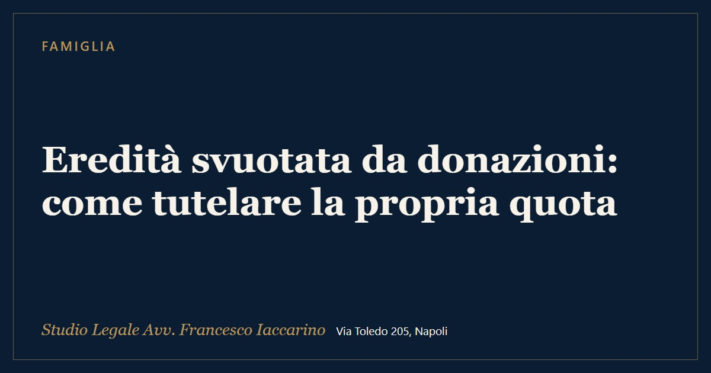

Eredità svuotata da donazioni: come tutelare la propria quota

Il problema delle donazioni che svuotano l'eredità
Accade spesso, purtroppo anche qui a Napoli, che un genitore decida di intestare un immobile di pregio o una somma ingente di denaro a uno solo dei figli, lasciando agli altri eredi un patrimonio residuo del tutto irrisorio. Questa situazione genera tensioni familiari profonde e un senso di ingiustizia che trova, però, una risposta precisa nel nostro ordinamento giuridico. Quando il genitore viene a mancare, gli eredi esclusi si trovano di fronte a un asse ereditario apparentemente povero, che non riflette affatto la reale ricchezza accumulata dal defunto durante la sua vita.
Il problema sorge nel momento in cui la disparità tra i figli diventa tale da intaccare la cosiddetta quota di legittima. Molti cittadini credono erroneamente che, una volta donato un bene, questo sia uscito definitivamente dal patrimonio del genitore e non possa più essere oggetto di contestazione. In realtà, la legge prevede meccanismi di protezione molto forti per evitare che le donazioni fatte in vita vengano utilizzate come strumento per diseredare, di fatto, i parenti più stretti.
Cosa dice la legge sulla quota di legittima
Il Codice Civile italiano stabilisce una protezione assoluta per i familiari più prossimi, ovvero il coniuge e i figli. A questi soggetti spetta sempre una porzione di ricchezza, chiamata quota di legittima, che il defunto non può in alcun modo intaccare, né tramite testamento né tramite donazioni eccessive effettuate quando era ancora in vita. Questa quota rappresenta un diritto intangibile che garantisce una tutela minima ai membri della famiglia.
Per verificare se tale quota sia stata rispettata, non ci si può limitare a guardare ciò che resta al momento del decesso, il cosiddetto relictum. È necessario procedere a un'operazione contabile chiamata riunione fittizia. In pratica, si somma il valore dei beni rimasti al momento della morte al valore di tutte le donazioni elargite dal defunto in vita, il cosiddetto donatum. Solo dopo aver sottratto eventuali debiti, si ottiene la massa patrimoniale su cui calcolare le quote spettanti a ciascun erede. Se il calcolo dimostra che la quota di legittima è stata lesa, scattano le tutele previste dalla legge.
L'azione di riduzione: lo strumento per il recupero
Quando ci si accorge che un fratello o una sorella ha ricevuto donazioni tali da svuotare la quota spettante agli altri, è possibile ricorrere all'avvocato successioni Napoli recupero legittima per avviare l'azione di riduzione, disciplinata dall'articolo 553 e seguenti del Codice Civile. Questa iniziativa legale permette di ottenere dal giudice l'annullamento dell'efficacia delle donazioni fatte in vita, nella misura necessaria a reintegrare la quota di legittima lesa.
Facciamo un esempio concreto per chiarire il meccanismo. Immaginiamo un genitore vedovo con due figli, Anna e Marco. Il padre, prima di morire, dona ad Anna un immobile del valore di 280.000 euro, lasciando nel conto corrente solo 20.000 euro. Il patrimonio totale da considerare è di 300.000 euro. La legge riserva a ciascun figlio un terzo del totale, ovvero 100.000 euro. Anna ha già ricevuto 280.000 euro, superando ampiamente la sua quota. Marco, che ha diritto a 100.000 euro, si ritrova con una parte minima del patrimonio residuo. Attraverso l'azione di riduzione, il tribunale ordinerà ad Anna di compensare Marco, versandogli la differenza necessaria per ripristinare l'equilibrio.
Cosa fare passo dopo passo
Se vi trovate in una situazione di disparità ereditaria, il primo passo è agire con prudenza e metodo. Non lasciatevi trascinare dall'emotività, ma seguite un percorso strutturato per tutelare i vostri diritti:
- Analisi documentale: Raccogliete tutti gli atti di donazione e gli estratti conto del defunto per ricostruire il valore del donatum.
- Verifica delle quote: Consultate un professionista per calcolare esattamente se la vostra quota di legittima è stata effettivamente lesa.
- Tentativo di conciliazione: Spesso è possibile evitare il tribunale attraverso un accordo bonario, in cui l'erede avvantaggiato rinuncia a parte dell'eredità o compensa in denaro gli altri fratelli.
- Azione giudiziaria: Se l'accordo non è possibile, l'azione di riduzione diventa l'unica via per ottenere giustizia davanti al giudice.
Errori da evitare e divieto di patti successori
Un errore molto comune è cercare di risolvere la questione quando il genitore è ancora in vita. È fondamentale ricordare che l'articolo 458 del Codice Civile sancisce il divieto assoluto dei patti successori. Qualsiasi accordo, scrittura privata o promessa verbale fatta prima della morte del genitore per dividersi l'eredità è nulla e non ha alcun valore legale. Non sprecate tempo ed energie in accordi prematuri che non potranno essere fatti valere in sede di successione.
Un altro errore è attendere troppo tempo. Sebbene l'accettazione dell'eredità possa avvenire entro dieci anni, le azioni per tutelare la legittima hanno termini di prescrizione che vanno monitorati con estrema attenzione. Inoltre, non date per scontato che la divisione dei beni sia automatica: se un erede rimane inerte, è possibile chiedere al tribunale la fissazione di un termine per l'accettazione, superato il quale il soggetto perde il diritto di partecipare alla successione.
Quando serve l'assistenza legale
La materia successoria è complessa e richiede una profonda conoscenza delle norme civilistiche. L'assistenza di un legale è indispensabile non solo per gestire il contenzioso in tribunale, ma anche per redigere accordi transattivi che siano validi e non impugnabili in futuro. Un professionista vi aiuterà a quantificare correttamente il valore dei beni, inclusi quelli immobiliari, e a navigare tra le insidie procedurali che potrebbero compromettere il recupero della vostra quota.
Se avete dubbi sulla gestione di un'eredità o sospettate che le donazioni fatte in vita abbiano leso i vostri diritti, è opportuno valutare la situazione con una consulenza mirata. Il nostro studio a Napoli è a disposizione per analizzare il vostro caso specifico. La consulenza iniziale, finalizzata a inquadrare la fattispecie e valutare la percorribilità delle azioni a tutela della legittima, ha un costo di 200 euro.
Spunto: La Legge per Tutti.
Domande frequenti
Cosa si intende per quota di legittima?
È la porzione di patrimonio che la legge riserva obbligatoriamente ai familiari più stretti, come coniuge e figli, e che il defunto non può sottrarre nemmeno con donazioni in vita.
Posso contestare una donazione fatta anni fa?
Sì, le donazioni fatte in vita dal defunto vengono conteggiate nel calcolo dell'asse ereditario. Se queste hanno leso la quota di legittima, è possibile agire con l'azione di riduzione.
Gli accordi presi prima della morte sono validi?
No, l'ordinamento italiano vieta i patti successori. Qualsiasi accordo sulla divisione dell'eredità firmato prima del decesso del genitore è nullo e privo di efficacia.
Ti riguarda da vicino?
Porta i documenti in studio o inviali per una consulenza da remoto: verifichiamo insieme i termini e la strada da seguire.
Prenota una consulenza — 200 €Oppure chiama direttamente: 333 568 4659
Avv. Francesco Iaccarino — Foro di Napoli — Via Toledo 205, 80132 Napoli